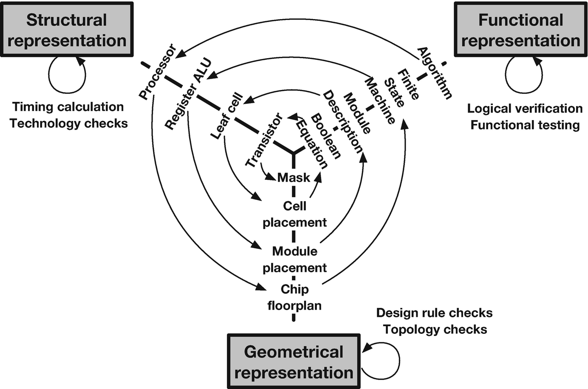

In VLSI design flow, there are three design domains: Functional or Behavioral, structural, and geometric or physical domain. They are strongly correlated to each other. The relationship between the three domains is represented by Gajski's Y chart. The three-arm (design domain) of the chart forms the letter "Y". The pictorial representation of the Y-chart is shown in the figure below.

The behavioral description of an algorithm can be implemented by using a processor. The process can be designed using the layout of the chip i.e. floorplanning. Similarly, in the behavioral domain, one algorithm may consist of several finite state machines (FSM) to execute the different tasks. At the structural level, the FSM can be realized using some memory elements such as registers. The same can be designed as a module during chip layout and floorplanning.
The next level of abstraction starts with module description, which can be represented by leaf cell i.e. a group of basic logic gates, flip flops, etc. The same can be placed using a cell placement inside the chip. In the next level of abstraction, the Boolean equation is used to describe the functionalities of a module, which can be structurally implemented using transistors followed by the mask/layout of a single transistor.
It is interesting to observe that at any design domain i.e. at any particular arm of "Y", the level of complexity reduces from outer towards the center of "Y", which indicates that not only three domains are correlated but the components present in a particular design domain is also related to each other.